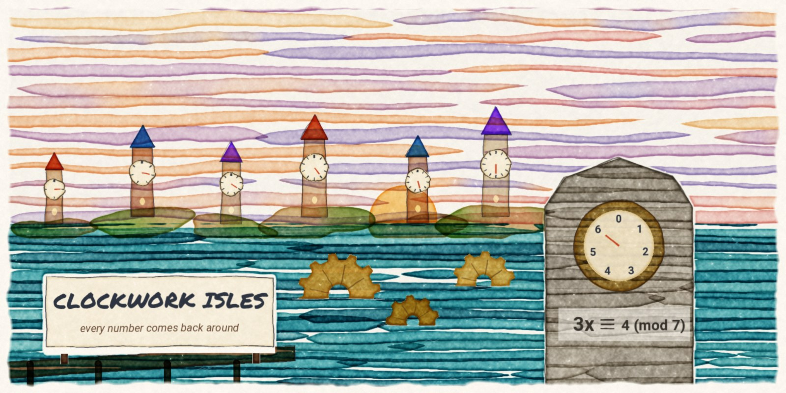

An archipelago where every island keeps its own clock, numbers never get bigger than the dial, and the gates only open for those who can run time backwards.
Night crossing. The sea below Prime Peaks is full of ticking. Islands rise out of the dark, each with a tower and a lit clock face, and no two faces have the same number of marks.
Ana (counting through binoculars): That one has seven marks. That one has twelve. The small one has four.
Diego: Four hours in a day. I'd finally have time for nothing.
The ship scrapes a jetty. Above it, a stone gate. Instead of a keyhole, a dial with seven marks, and words carved around it: 3x ≡ 4.
El Gran Pesado (seated on the gate, swinging his boots): On these islands a number is only where it lands on the dial. Twenty-five is four on the seven-clock. Twenty-five is one on the twelve-clock. Every gate here asks you to turn the dial backwards. Most of you never will.
Mateo: And if a gate can't be opened?
El Gran Pesado: Then say so. Be right, and it falls. Be wrong, and you stay on this rock until the clocks rust.
Lucía (already turning the dial): Times three, four times… We've done this before. This is the Forge again, wearing a clock.
A clock with m marks. Start somewhere, then hop forward by the same step again and again. Which marks do you ever land on?
Sections marked Core are taught on both schedules. Semester sections are taught in class on the semester schedule and are reading on the quarter schedule. Optional code quests can replace Navigator problems on either schedule. On the quarter schedule, Lab notes, Studio corners, strategy questions and Navigator or Cartographer problems are extensions students choose.
Each session is 50 minutes. Both full schedules
On a clock with m marks, labelled 0 to m − 1, a number lands on its remainder when divided by m (the division algorithm, Theorem 1.1). So 25 lands on 1 on the 12-clock, because 25 = 2 · 12 + 1. A negative number lands by going backwards: −1 lands on 11.
Pick a confidence for each card before you read on. Your choices stay in this browser only. Each card names the section that settles it. This chapter also opens three old cards from the Vault in a new language; they are in "The Book in clock language".
Let m ≥ 2 be an integer, the modulus. We say a is congruent to b modulo m, and write
You met this in Chapter 0 for m = 3, with Doña Trina's trios, and Chapter 4 sorted tolls into columns by their remainder. The columns now get their name: the congruence class of a is the set of all integers congruent to a, one mark on the clock.
(a) a ≡ b (mod m) exactly when a and b leave the same remainder when divided by m. (b) Congruence behaves like equality: a ≡ a; if a ≡ b then b ≡ a; if a ≡ b and b ≡ c then a ≡ c. So the integers split into exactly m classes, one for each remainder 0, 1, …, m − 1.
Proof. (a) Write a = qm + r and b = q'm + r' with 0 ≤ r, r' < m. Then a − b = (q − q')m + (r − r'). If r = r', this is a multiple of m. Conversely, if m | a − b, then m | r − r', and |r − r'| < m, so r − r' = 0.
(b) Each property is now a property of "same remainder", and equality of remainders is reflexive, symmetric and transitive. By the division algorithm, every integer has exactly one remainder, so it lies in exactly one of the m classes.
If a ≡ b and c ≡ d (mod m), then a + c ≡ b + d, a − c ≡ b − d, and ac ≡ bd (mod m). In particular ak ≡ bk (mod m) for every k ≥ 1.
Proof. We know m | a − b and m | c − d. Sums: (a + c) − (b + d) = (a − b) + (c − d), a sum of multiples of m (Chapter 1: crates add up). Differences are the same. Products, with a trick: add and subtract ad,
and both terms are multiples of m. Powers follow by induction on k, using the product rule with c = ak−1 and d = bk−1.
Careful: the rules say nothing about division or about exponents. 2 ≡ 7 (mod 5), but 22 = 4 and 27 = 128 ≡ 3. Exponents live on a different clock, and Fermat's Lighthouse (Chapter 8) finds which one.
Every page of this voyage so far has been a congruence in disguise.
Compute ak on the m-clock by multiplying one step at a time and landing on the dial after every step. The numbers never grow past m².
Every chemical substance has a CAS Registry Number, and its last digit is a check digit computed on the 10-clock. Water is 7732-18-5: take the other digits from the right, times 1, 2, 3, …, and add: 8·1 + 1·2 + 2·3 + 3·4 + 7·5 + 7·6 = 105, which lands on 5. Ethanol, 64-17-5, lands on 5 too. Check digits get their own section below.
A number written in base ten is a sum of digits times powers of 10. On the 9-clock, 10 ≡ 1, and on the 11-clock, 10 ≡ −1. Theorem 6.2 does the rest.
If n has digits dk … d1d0, then n ≡ d0 + d1 + ⋯ + dk (mod 9), and n ≡ d0 − d1 + d2 − ⋯ (mod 11).
Proof. n = Σ di 10i. Since 10 ≡ 1 (mod 9), each 10i ≡ 1, so n ≡ Σ di. Since 10 ≡ −1 (mod 11), each 10i ≡ (−1)i.
Checking arithmetic. If 4,729 × 386 = 1,825,394 were right, the digit sums would agree mod 9: 4 + 7 + 2 + 9 = 22 ≡ 4 and 3 + 8 + 6 = 17 ≡ 8, so the product should be ≡ 4 · 8 = 32 ≡ 5. And 1 + 8 + 2 + 5 + 3 + 9 + 4 = 32 ≡ 5. The check passes, and the product is in fact right. Now swap two digits of the answer: the digit sum does not change, so casting out nines can never see a swap. That weakness is the whole story of the check digits below.
Every square is ≡ 0 or 1 (mod 4). Every odd square is ≡ 1 (mod 8).
Proof. Mod 4, every integer is ≡ 0, 1, 2 or 3, and their squares are 0, 1, 4 ≡ 0, 9 ≡ 1. For odd n = 2k + 1, n² = 4k(k + 1) + 1, and k(k + 1) is even (one of two neighbours is even, Chapter 0), so 8 | n² − 1.
Join each point k on a clock of 200 points to 2k and a heart appears: the times-table circle. Walk the 12-note piano clock by steps of 7 (the circle of fifths) and you hear every note before coming home, because gcd(7, 12) = 1: the note clock. Weave the clock's remainders into cloth: residue weave.
Adding is easy to undo on a clock: subtract. Multiplying is not. On the 4-clock,
so you cannot cancel the 2: Prophecy 6.1 is broken. Worse, 2 · 2 ≡ 0 (mod 4): two marks that are not 0 multiply to 0. To undo "times a" we need a number that multiplies a back to 1.
An inverse of a modulo m is an integer x with ax ≡ 1 (mod m). We write x = a−1 (mod m); it is a whole number, not a fraction. On the 7-clock, 3−1 = 5, because 3 · 5 = 15 ≡ 1.
a has an inverse modulo m if and only if gcd(a, m) = 1. The inverse is unique on the clock: any two inverses are congruent mod m.
Proof. If gcd(a, m) = 1, Bézout (Theorem 3.2) gives integers x, y with ax + my = 1. Then ax − 1 = −my is a multiple of m, so ax ≡ 1. Conversely, if ax ≡ 1, then ax − 1 = mk for some k, and any common divisor of a and m divides ax − mk = 1.
Uniqueness: if ax ≡ 1 ≡ ax', multiply both sides by x: x' ≡ (xa)x' = x(ax') ≡ x.
(a) If gcd(c, m) = 1 and ac ≡ bc (mod m), then a ≡ b (mod m). (b) If p is prime, every a ≢ 0 (mod p) has an inverse mod p.
Proof. (a) Multiply both sides by c−1 (Theorem 6.5 and Theorem 6.2). (b) The only positive divisors of p are 1 and p, and p ∤ a, so gcd(a, p) = 1.
So Prophecy 6.2 is broken on the 4-clock (2 has no inverse) but fulfilled on every prime clock. That is why the 7-clock was so generous in Explore 3.
Let g = gcd(a, m). The congruence ax ≡ b (mod m) has a solution if and only if g | b. In that case it has exactly g solutions on the m-clock: if x0 is one, they are x0, x0 + m/g, x0 + 2m/g, …, x0 + (g − 1)m/g.
Proof. ax ≡ b (mod m) means ax − my = b for some integer y: a linear Diophantine equation. By Chapter 4 it is solvable exactly when g | b, and by Theorem 4.2 every solution has x = x0 + t · m/g for an integer t. Two of these values land on the same mark exactly when m divides (t − t') · m/g, that is, when g | t − t'. So t = 0, 1, …, g − 1 give all the different marks.
The jetty gate: 3x ≡ 4 (mod 7). Here gcd(3, 7) = 1, so there is one solution: multiply by 3−1 = 5 to get x ≡ 20 ≡ 6. Check: 3 · 6 = 18 ≡ 4.
Cells that land on 1 are outlined and bold. A row with a 1 belongs to a number that has an inverse; its label is marked with ★. Rows without ★ have no 1 at all, and every such row also has a 0 somewhere other than column 0.
Euclid's algorithm forward, then Bézout backwards, as in the Forge.
El Gran Pesado guards the gates of the Isles. Each gate has a lock ax ≡ b (mod m) and a ring of keyholes. Every mark x on the clock that solves the lock is a keyhole. The whole room plays together, against him:
Guessing every mark will open the gate, but it feeds El Gran Pesado. Theorem 6.7 tells you how many keyholes there are before you try a single key.
What is the smallest number of points El Gran Pesado can be held to on every gate, if the room reasons first? Prove it. Then build a gate on the 30-clock with exactly 6 keyholes, and one on the 30-clock that looks solvable but is ¡Imposible!
Keyholes opened at this gate:
People copy long numbers all the time: book codes, barcodes, card numbers, chemical IDs. A check digit is one extra digit chosen so that a weighted sum of all the digits lands on 0 on some clock. A typo almost always knocks the sum off 0, and the computer refuses the number before anything goes wrong.
A 10-digit book number d1d2…d10 is valid when
The last digit can need the value 10, written X. Example: 0-306-40615-2 gives 0 + 27 + 0 + 42 + 24 + 0 + 24 + 3 + 10 + 2 = 132 = 12 · 11.
If one digit of a valid ISBN-10 is changed, or if any two different digits are swapped, the result is not valid.
Proof. Changing d to d' at a place with weight w changes the sum by w(d' − d). Both w and d' − d are between −10 and 10 and not 0, so neither is divisible by the prime 11, and by Euclid's lemma (Lemma 5.4) neither is their product. Swapping digits d ≠ e at places with weights w ≠ v changes the sum by (w − v)(e − d), again a product of two numbers that 11 does not divide. Either way the sum moves off 0.
The 12-digit barcode on groceries (UPC-A) weighs its digits 3, 1, 3, 1, …, 3, 1 and asks for a sum ≡ 0 (mod 10). Since 2007, books carry 13-digit ISBNs that use the same idea with weights 1, 3, 1, 3, … Example: 0-36000-29145-2 gives 3·(0 + 6 + 0 + 2 + 1 + 5) + (3 + 0 + 0 + 9 + 4 + 2) = 42 + 18 = 60.
The UPC catches every single-digit typo. It catches a swap of two neighbouring digits d and e unless d − e = ±5.
Proof. A typo changes the sum by w(d' − d) with w = 1 or 3. Both are units on the 10-clock (gcd with 10 is 1), so by Corollary 6.6 this is ≡ 0 only when d' ≡ d, which is impossible for two different digits. A neighbour swap changes the sum by (3 − 1)(e − d) or (1 − 3)(e − d), that is ±2(e − d). And 10 | 2(e − d) exactly when 5 | e − d. For two different digits, that means e − d = ±5.
So Prophecy 6.3 is broken: swap 0 and 5, or 2 and 7, and the barcode says nothing. The problem is that 2 is not a unit mod 10. The 11-clock has no such problem, because 11 is prime: the price is the extra symbol X.
Type a code without its check digit and let the inspector add it, or type a full code to inspect it. Then let El Gran Pesado tamper with it.
The check digit has a thick border. A tampered digit has a dashed border and is named in the report, so nothing depends on colour.
Credit and debit card numbers, and many ID numbers, end with a Luhn check digit. Starting from the check digit and moving left, double every second digit; if a doubled digit is 10 or more, add its two digits (equivalently, subtract 9). The number is valid when the total is ≡ 0 (mod 10).
Example: 79927398713. From the right: 3, then 1 doubled is 2, then 7, then 8 doubled is 16 → 7, then 9, then 3 doubled is 6, then 7, then 2 doubled is 4, then 9, then 9 doubled is 18 → 9, then 7. The total is 70.
Why the strange doubling? Weights must be units mod 10 to catch typos, so 2 alone would fail. But the map d ↦ "double and add the digits" sends 0, 1, …, 9 to 0, 2, 4, 6, 8, 1, 3, 5, 7, 9: every digit to a different digit. So every single typo is still caught. Neighbour swaps are caught too, except 09 ↔ 90.
"Every typo is caught" is a statement about all card numbers, but it reduces to a claim about the ten digits 0 to 9: does doubling-and-adding hit each value once? When a proof reduces a claim to finitely many cases, checking them all is a complete proof. Try the same for swaps: there are 45 pairs of different digits to check (Cartographer problem 2).
The CAS check digit uses weights 1, 2, 3, 4, … on the 10-clock. Weights 2, 4, 5, 6 and 8 are not units mod 10, so some typos slip through: the fifth digit to the left of the check digit has weight 5, so it can be off by 2 and nobody notices. Chemists rely on other checks too, like the formula and the name. Navigator problem 5 finds every blind spot.
Where check digits are used: barcodes and books, card numbers, chemical IDs, and a computer clock that runs out in 2038. Open the Field Station
Inverses in disguise: the affine cipher multiplies letters on the 26-clock, and a key can be undone exactly when it has an inverse. Scramble a picture by multiplying pixel positions in the Pixel Room, and see why only some multipliers can be unscrambled.
Around the world, 3rd to 13th centuries. Hippolytus of Rome (3rd century) described digit sums, but not as a check. The first surviving use of casting out nines to check a calculation is in the Mahāsiddhānta of the Indian astronomer Āryabhaṭa II, around 950. Ibn Sīnā (Avicenna) gave full details around 1020, and Fibonacci's Liber Abaci (1202) taught the check to European merchants.
Brunswick, 1801. Carl Friedrich Gauss, 24 years old, published Disquisitiones Arithmeticae. Its first pages define congruence and introduce the symbol ≡, the notation in this chapter.
Paris, 1804 to 1809. Sophie Germain, who was not allowed to study at the École Polytechnique because she was a woman, read the Disquisitiones and wrote to Gauss under a man's name, "Monsieur LeBlanc". Gauss learned who she was only after the French occupation of his city in 1806, when she asked a French general, a friend of her family, to make sure Gauss was safe. He wrote back with warm admiration. Her later work on Fermat's Last Theorem is still studied.
London, 1965 to 1970. The statistician Gordon Foster, commissioned by the bookseller W H Smith, devised the 9-digit Standard Book Number. It grew into the 10-digit ISBN, an international standard (ISO 2108) from 1970, and books switched to 13 digits on 1 January 2007.
New York and Troy, Ohio, 1950s to 1974. At IBM, Hans Peter Luhn devised his check in the 1950s and patented it in 1960. George Laurer, also at IBM, designed the barcode chosen as the UPC. The first UPC ever scanned at a store checkout was a pack of chewing gum, at a supermarket in Troy, Ohio, on 26 June 1974.
Deckhand problems are for everyone. Navigator and Cartographer problems are where you stretch.
These cells run real Python in your browser. The first run loads Python (about 10 MB, once). Edit anything and run again. In Python, a % m lands a on the m-clock, and pow(a, k, m) computes powers on the clock.
Produce the clock rules step by step: if m divides a − b and c − d, then it divides (a + c) − (b + d) and ac − bd. Each recipe has more than one route and ends with a lab report. Open the Proof Lab
The last gate falls with a sound like a dropped wrench. El Gran Pesado climbs down, unimpressed, and taps the biggest tower. Its face has two dials, one with 260 marks and one with 365. "Out there," he says, pointing east, "they read two clocks at once. Let's see you do that." Kevin is already counting: "Thirteen times twenty… and three hundred sixty-five is five times seventy-three…"